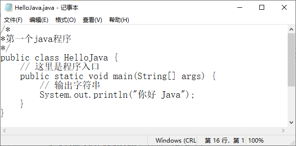
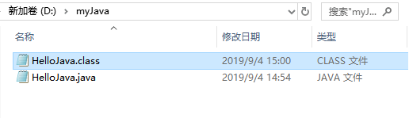
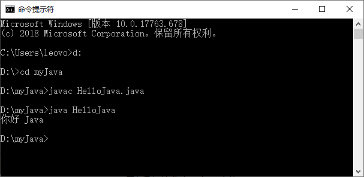

首页 > Java教程 > Java入门基础及环境搭建
使用记事本编写运行Java程序
经过上节的操作已经配置完了 Java 的开发环境，但并不清楚所配置的开发环境是否真的可以运行 Java 应用程序。为了解除这个疑虑，也为了使读者对开发 Java 应用程序的步骤有一个初步的了解，本节将展示一个完整 Java 应用程序的开发过程。
(1) 新建一个空白记事本，然后如实地输入下列内容。 很多初学者可能不明白此程序的全部意义，没关系，请完全按照实例的样式输入，包括各种括号与标点符号。
(2) 将写完代码后的文件另存为 HelloJava.java，保存类型选择“所有文件”，接着单击“保存”按钮，保存文件到 D:\myJava 文件夹中，如图 1 所示。
提示：保存的文件名中不能出现空格，类似“Hello Java.java”的文件名在编译时会出现找不到文件的错误。
运行 Java 程序需要使用 JDK 中的 java 命令，例如运行上步生成的 .class 文件，完整命令如下：
对图片中各个步骤的说明：
(1) Error:cannot read:HelloJava.java javac。
工具程序找不到指定的 java 文件，需要检查文件是否存储在当前目录中，或文件名是否错误。
(2) HelloJava.java:4:class HelloJava is public,should be declared in a file named MyApplication.java。
源文件中类的名称和源文件名称不符，需要确定源文件名称和类名称是否相同。
(3) HelloJava.java:6:cannot find symbol。
源程序文件中某些代码部分输入错了，最常产生的原因可能是没有注意到字母的大小写。
(4) Javac 不是内部或外部命令、可执行程序或批量文件。
path 设置有误或没有在 path 系统变量中加入 JDK 的 bin 目录。
如果没有出现上述所列问题，即成功编译了该 Java 文件。在解释执行 .dass 文件时，可能会出现下面几个常见问题。
(1) Exception in thread “main” java.lang.NoClassDe£FoundError。
Java 工具程序找不到所指定的 .class 类，需要确定指定的类是否存储在当前目录中，名称是否正确。
(2) Exception in thread “main” java.lang.NoSuchMetliodError:main。
没有指定 Java 程序的入口。Java 工具程序指定的类必须有一个程序入口，也就是必须包括 main(String args[]) 这个方法。
提示：在后面的章节中，如果不是特别强调，就不再重复介绍如何编译与解释执行 Java 程序。
编写Java源程序
Java 源程序可以使用任何一个文本编辑器来编写，这里以 Windows 下的记事本为例。(1) 新建一个空白记事本，然后如实地输入下列内容。 很多初学者可能不明白此程序的全部意义，没关系，请完全按照实例的样式输入，包括各种括号与标点符号。
/*
*第一个java程序
*/
public class HelloJava {
// 这里是程序入口
public static void main(String[] args) {
// 输出字符串
System.out.println("你好 Java");
}
}
下面对源代码中的重要组成元素进行简单介绍。
- 关键字 public 表示访问说明符，表明该类是一个公共类，可以控制其他对象对类成员的访问。
- 关键字 class 用于声明一个类，其后所跟的字符串是类的名称。
- 关键字 static 表示该方法是一个静态方法，允许调用 main() 方法，无须创建类的实例。
- 关键字 void 表示 main() 方法没有返回值。
- main() 方法是所有程序的入口，最先开始执行。
- “/*”“*/”之间的内容和以“//”开始的内容为 Java 程序的注释。
(2) 将写完代码后的文件另存为 HelloJava.java，保存类型选择“所有文件”，接着单击“保存”按钮，保存文件到 D:\myJava 文件夹中，如图 1 所示。

图 1 保存 HelloJava.java 文件
图 1 保存 HelloJava.java 文件
提示：保存的文件名中不能出现空格，类似“Hello Java.java”的文件名在编译时会出现找不到文件的错误。
编译和运行
将 Java 源程序编写并保存到文件之后，还需要进行编译才能运行。编译 Java 源程序使用的是 JDK 中的 javac 命令，例如编译上节的 HelloJava.java，完整命令如下。javac HelloJava.javajavac HelloJava.java 命令的作用是让 Java 编译器获取 Java 应用程序 HelloJava.java 的源代码，把它编译成符合 Java 虚拟机规范的字节码文件。这时会生成一个新文件 HelloJava.class，此文件便是我们所说的字节码文件，它也是 JVM 上的可执行文件，如图 2 所示。

图 2 生成 HelloJava.class 文件
图 2 生成 HelloJava.class 文件
运行 Java 程序需要使用 JDK 中的 java 命令，例如运行上步生成的 .class 文件，完整命令如下：
java HelloJava具体的执行效果如图 3 所示。

图 3 HelloJava执行效果
图 3 HelloJava执行效果
对图片中各个步骤的说明：
- 选择“开始”|“运行”命令，打开“运行”对话框后输入 cmd 命令，按 Enter 键进入到 DOS 环境。
- 输入 d: 按 Enter 键，切换到 Java 源程序所在的 D 盘。
- 输入 cd myJava 命令，进入 Java 源程序所在的目录，即 d:\myJava。
- 输入 javac HelloJava.java 命令进行编译，此时如果没有任何其他信息，表示该源程序通过了编译；反之便说明程序中存在错误，必须在记事本中打开 HelloJava.java 文件进行修改，再次保存此文件后回到命令提示符窗口重新编译（可能要反复几次），直到编译通过为止。
- 输入 java HelloJava 命令执行程序，如果出现“你好 Java”字符，说明程序执行成功。
编译常见错误解决方法
在使用 javac 编译器编译源代码文件时，可能会出现下面几个常见问题。(1) Error:cannot read:HelloJava.java javac。
工具程序找不到指定的 java 文件，需要检查文件是否存储在当前目录中，或文件名是否错误。
(2) HelloJava.java:4:class HelloJava is public,should be declared in a file named MyApplication.java。
源文件中类的名称和源文件名称不符，需要确定源文件名称和类名称是否相同。
(3) HelloJava.java:6:cannot find symbol。
源程序文件中某些代码部分输入错了，最常产生的原因可能是没有注意到字母的大小写。
(4) Javac 不是内部或外部命令、可执行程序或批量文件。
path 设置有误或没有在 path 系统变量中加入 JDK 的 bin 目录。
如果没有出现上述所列问题，即成功编译了该 Java 文件。在解释执行 .dass 文件时，可能会出现下面几个常见问题。
(1) Exception in thread “main” java.lang.NoClassDe£FoundError。
Java 工具程序找不到所指定的 .class 类，需要确定指定的类是否存储在当前目录中，名称是否正确。
(2) Exception in thread “main” java.lang.NoSuchMetliodError:main。
没有指定 Java 程序的入口。Java 工具程序指定的类必须有一个程序入口，也就是必须包括 main(String args[]) 这个方法。
提示：在后面的章节中，如果不是特别强调，就不再重复介绍如何编译与解释执行 Java 程序。
关注公众号「站长严长生」，在手机上阅读所有教程，随时随地都能学习。内含一款搜索神器，免费下载全网书籍和视频。

微信扫码关注公众号